Return to Assignment 1 Overview
Skip ahead to single-scale alignment result images
Skip ahead to multi-scale pyramid result images (Trial 5)
Each set of glass plates has three grayscale exposures: BGR from top to bottom. I split the top third into blue, the middle third into green, and the bottom third into red, but noticed that not all 3 images were always the same size. As a result, I decided to resize the green and red images to be the same size as the blue image.
Here is an example of what the train set looked like split into its 3 separate parts:
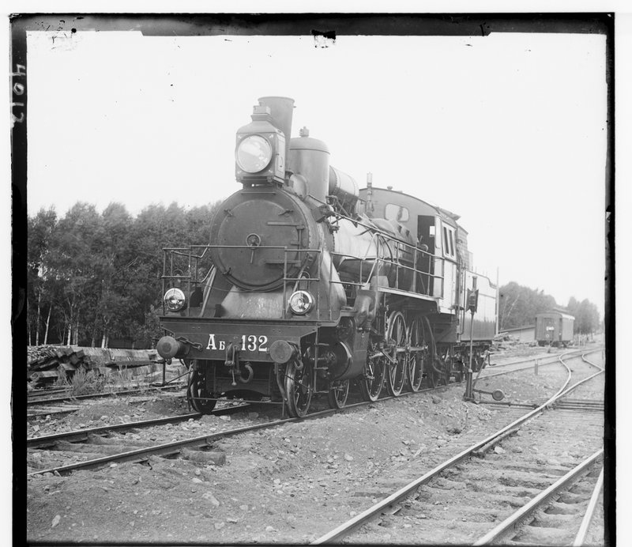
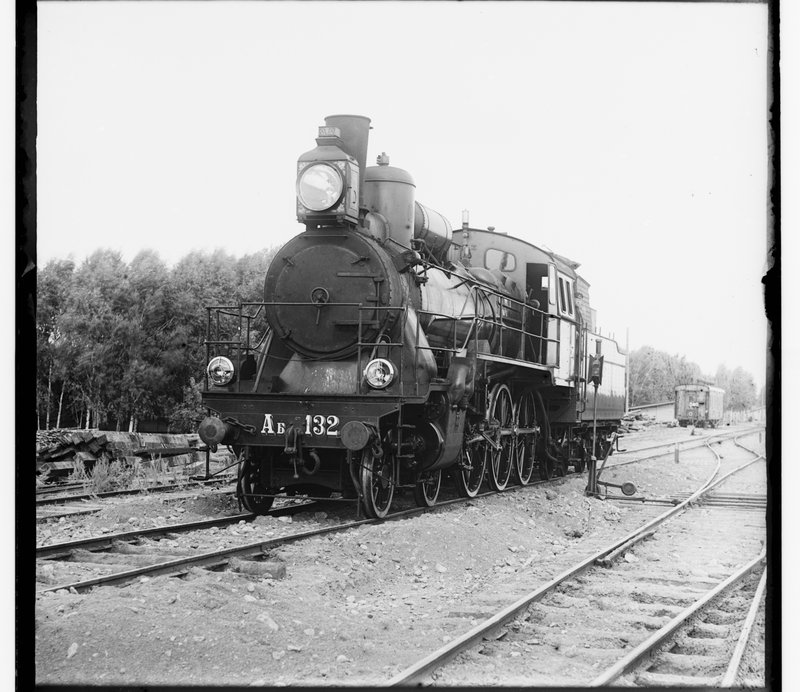
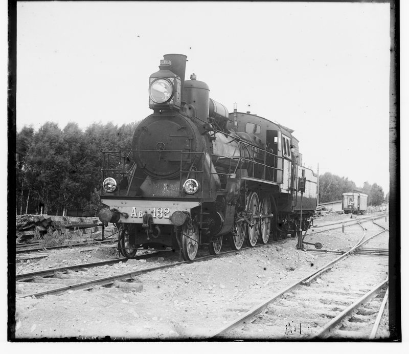
I kept the blue image fixed, and tested horizontal and vertical displacements for the green and red images. At each position, I took an interior crop from the green image and compared it with the same area of the blue image. The same activity was separately performed for the red image against the blue image as well. I chose to use euclidean distance (L2) as the metric to compare each pixel. The lowest L2 score gives the offset for that corresponding image.
L2 = sqrt(sum over the crop of (blue image - shifted image) squared).
I chose to score only the interior because I didn't want the plate borders, which looked different for each image, to affect the L2 score. The reported offsets describe where the crops were sampled relative to blue, but the final placement uses the opposite sign.
Two methods were used to align images: single-scale alignment and multi-scale pyramid alignment.
The single-scale alignment method was to be tested on 3 images: train, woman's portrait, and building. Here is a breakdown of the steps I took to be able to perform the alignment:
I read the image set in grayscale and then started by splitting the blue image using blue = img[0:int(total_rows/3)]. I took the next two thirds for green and red and used cv2.resize to match their dimensions to blue.
The train and the woman's portait were high resolution images and an exhaustive search would take a long time on the original images so I decided to subsample for speed. I used blue_subsampled = blue[::2, ::2] to keep only every other row and column for the blue image, and then did the same for the green and the red. Each L2 comparison uses about one quarter of the original pixels, which saved time.
The search radius is estimated_border_size = int(min(height, width)*0.10) and the interior crop size is size = min(height, width)-estimated_border_size*4. This makes it so that it stays away from the plate borders. The x and y loops test offsets from the negative radius to just below the positive radius.
The blue image stays fixed and I compare it with the shifted green and red crops using np.linalg.norm(blue_img_crop.astype("float32") - green_img_crop.astype("float32")) and the same for the red. I keep the lowest L2 scores for each.
I multiply each offset by two since I had originally subsampled the images by taking every other row and column only: new_green_image_offset = np.array(green_image_offset)*2
I tested the train, woman's portrait, and building plates. These offsets are in full-resolution pixels:
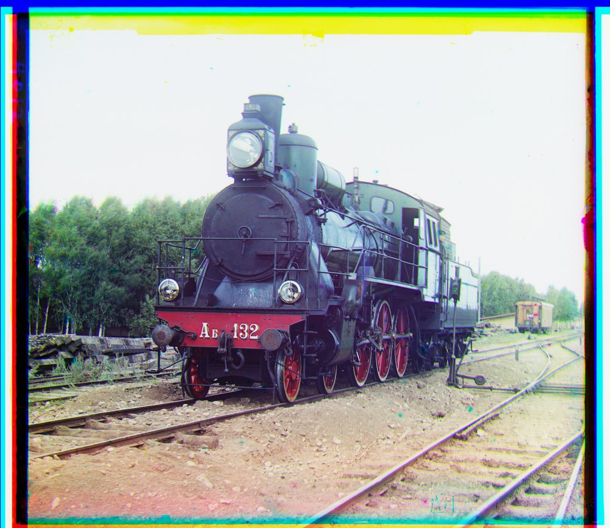
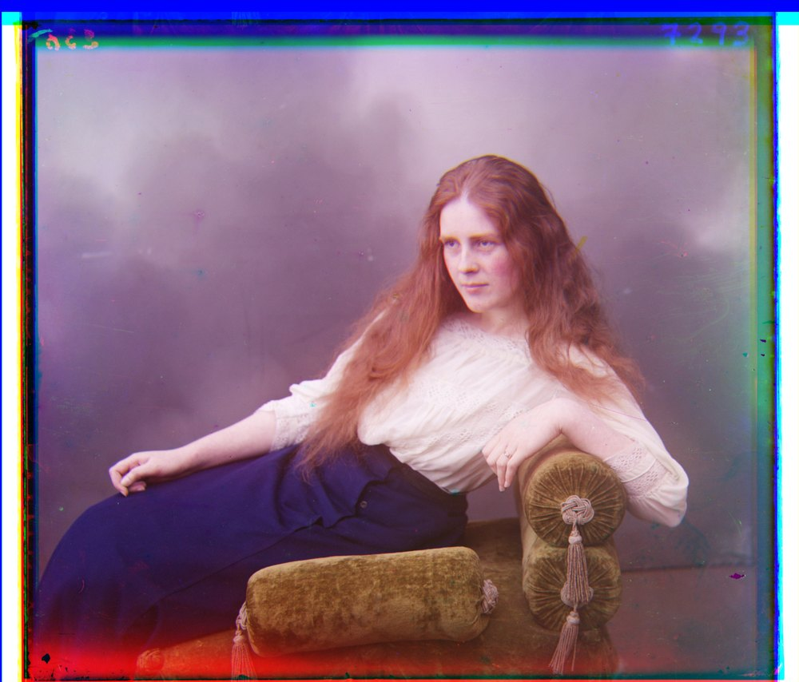
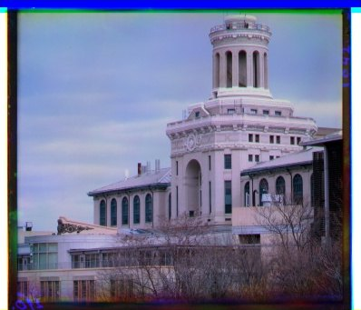
Since the single-scale alignment method can be very time consuming, I also tested the multi-scale pyramid alignment method. This method was to be tested on 18 images, and a few additional plates of my choosing. I chose the beans, siren, and sculptures images. Here is a breakdown of the steps I took to be able to perform the alignment:
I start each channel list with the full-size image. The downsample loop adds cv2.pyrDown(blue_img) and does the same for green and red. It smooths before halving each dimension. For each trial, I change the amount of times I downsample the image, but in my final trial where all of my images are aligned well, I downsample 3 times when it is a high resolution image, for example when max(blue_img.shape) is over 1000 pixels, and only one time when its smaller.
The initial sweep is xy_sweep = int(min(height, width)*0.10). The green and red estimates start at [0, 0]. I used the same float32 L2 comparison as used in the single-scale alignment method.
The loop for i in range(len(blue_pyramid)-1, -1, -1) goes toward full resolution. I added a local correction and doubled the estimate for the next level with old_green_image_offset = new_green_image_offset*2. The local sweep is 10 pixels at small levels and 3 pixels at larger levels. The next crop size is int(min(height, width)*0.6).
In trial 1-3 this was not performed, but in trial 4 and 5 I tested the effect of normalization using cv2.normalize. In trial 5, I tested brightness adjustment by taking the mean brightness of the blue image and moving the green and red means toward the blue mean with cv2.convertScaleAbs.
I place blue at the centre of a padded canvas and stack green and red using the opposite of their measured crop offsets. I left the scan borders in the output.
I changed the pyramid depth, then tried intensity normalization and a mean brightness adjustment.
| Trial | Large plates | Small plates | Normalize | Mean shift |
|---|---|---|---|---|
| 1 | 1 | 1 | No | No |
| 2 | 2 | 2 | No | No |
| 3 | 3 | 1 | No | No |
| 4 | 3 | 1 | Yes | No |
| 5 | 3 | 1 | Yes | Yes |
Trial 1 missed the red channel on the mural (01269v). Trial 2 also missed the fruit stall (01728v). Trials 3 and 4 put the red channel far from the textile shop (01725u). Normalization alone did not fix these cases. In Trial 5, the mean brightness adjustment changed those offsets and reduced the double edges.
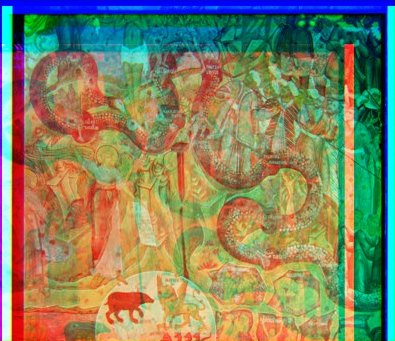
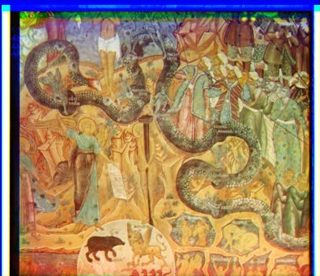
The mural red channel is displaced.
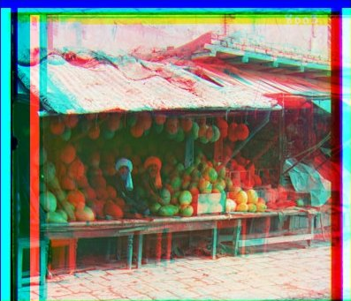
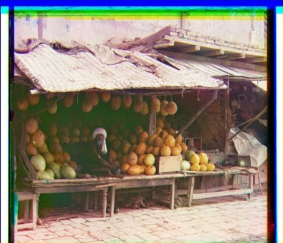
The fruit stall roof and produce are doubled.
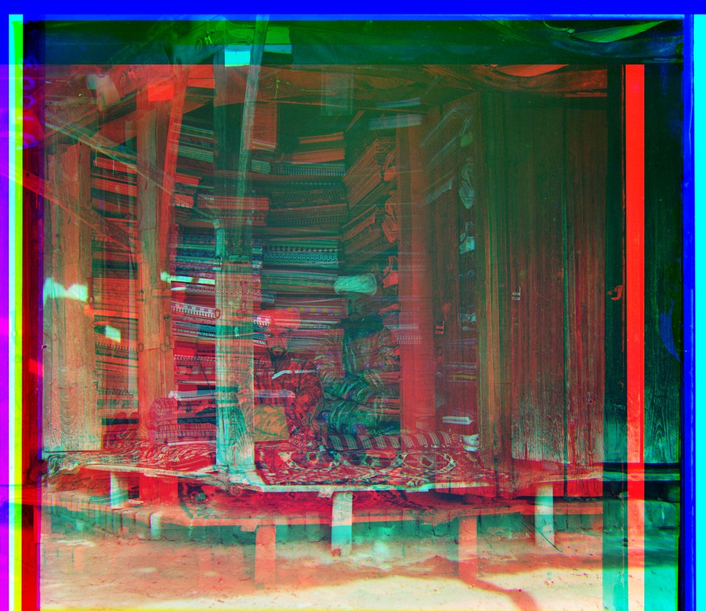
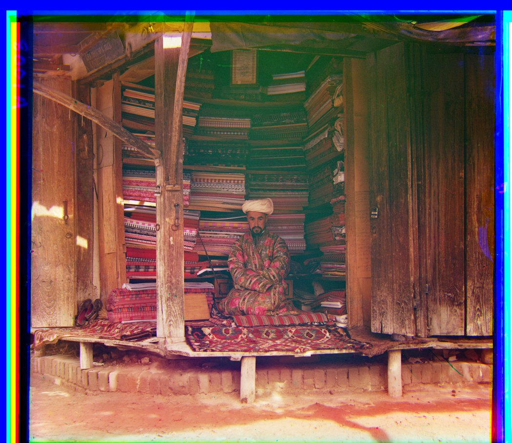
The red channel is far from the shop.
Normalization alone still misses the mural.
These are the Trial 5 results. I removed the blank canvas for display and left the coloured scan borders.
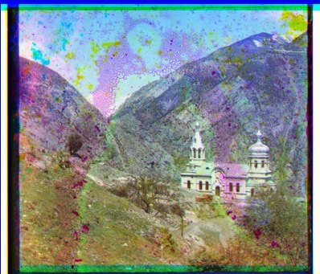
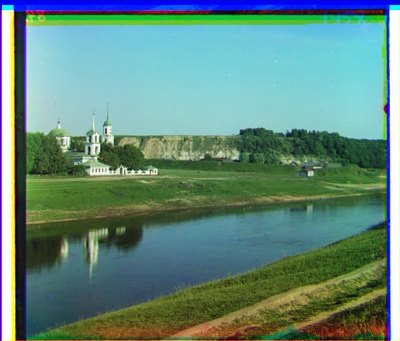
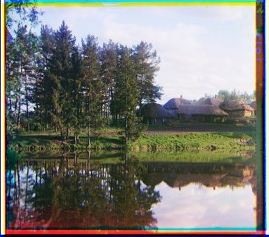
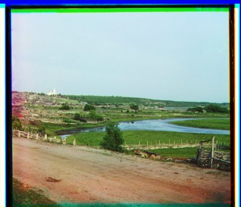
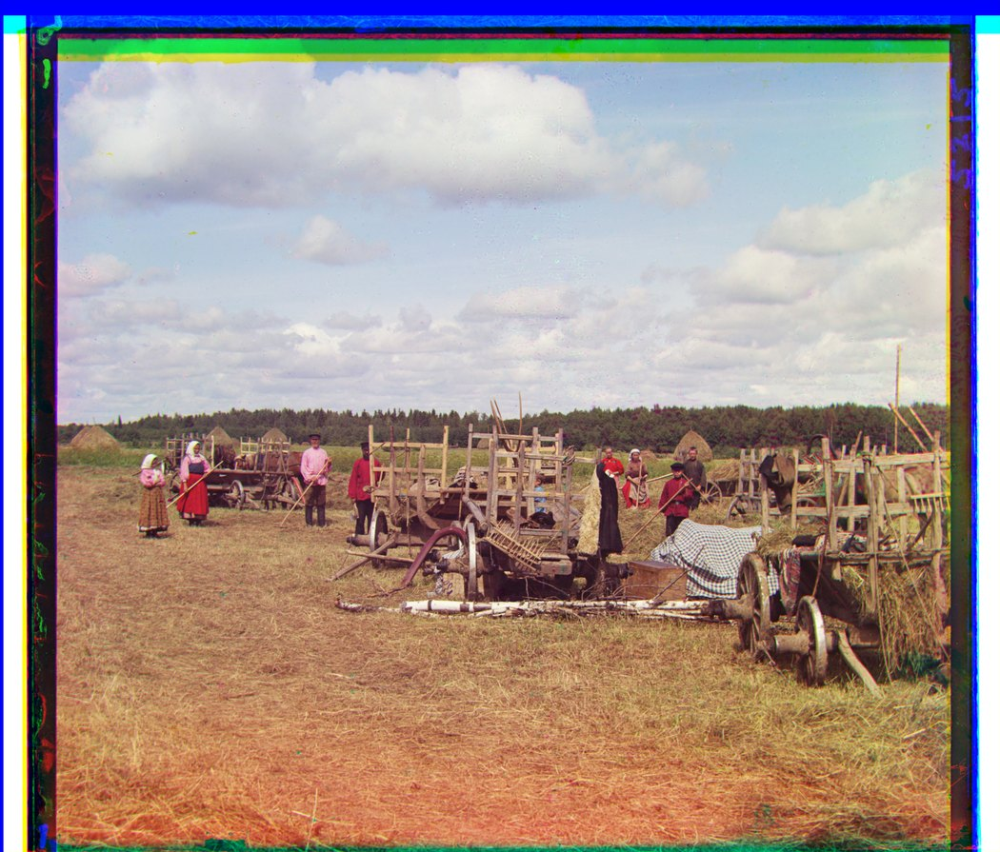
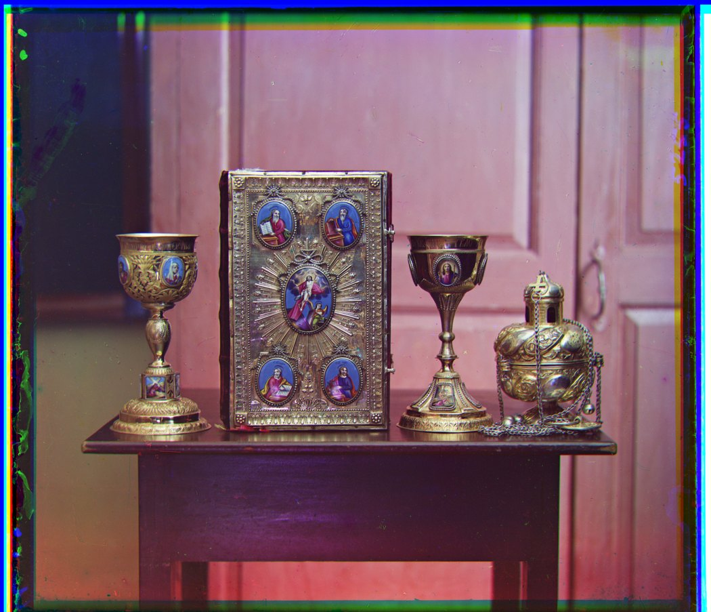
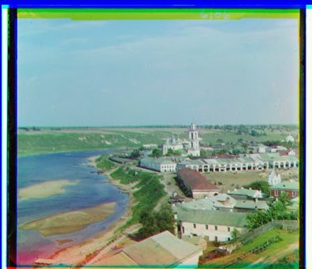
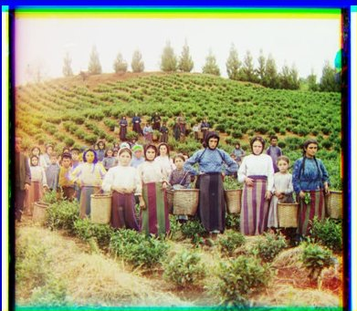
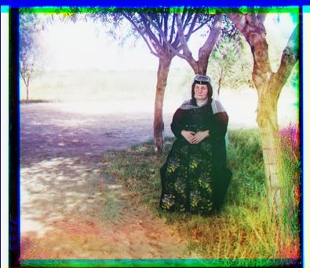
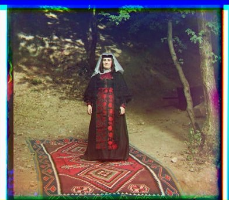
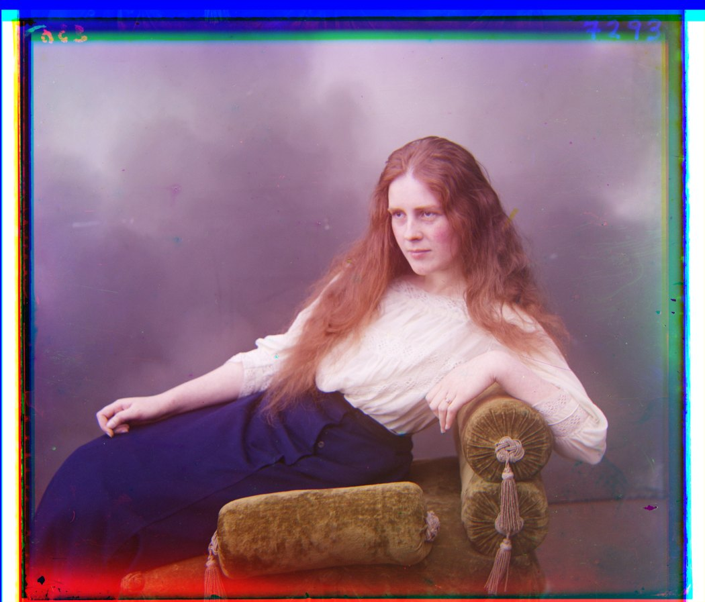
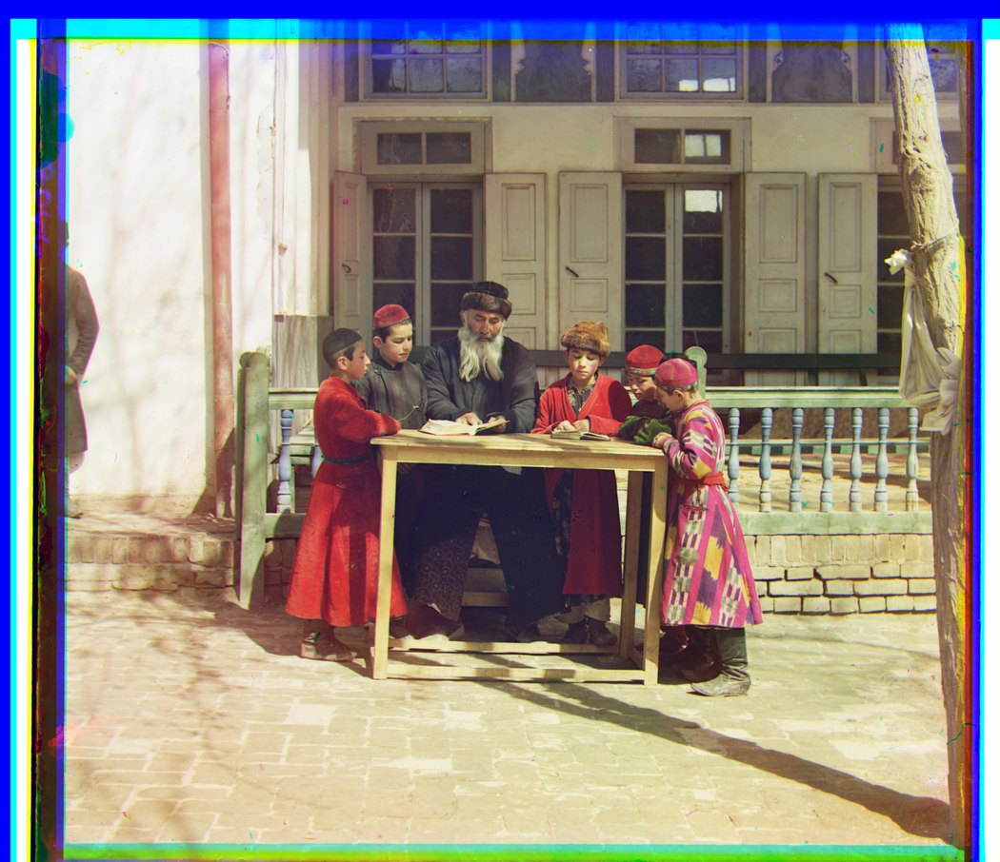
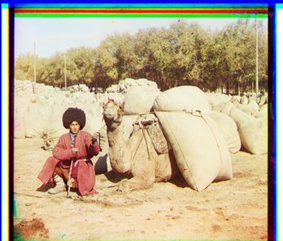
I also ran the final settings on beans, siren, and sculptures from the collection. I did not tune the settings separately for these images.
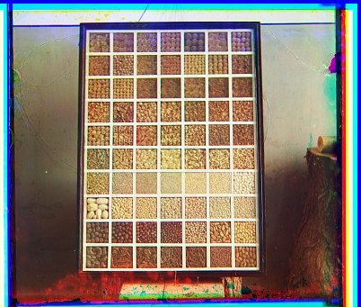
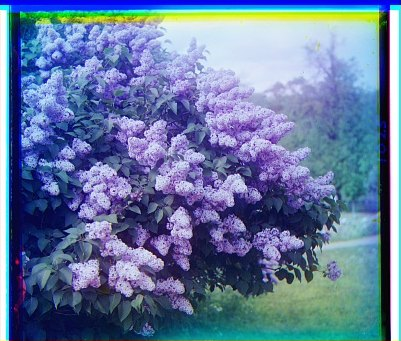
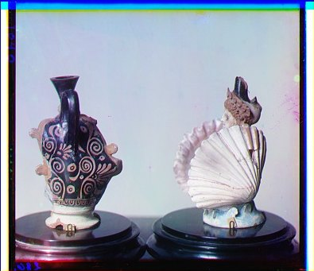
These are the Trial 5 offsets in full-resolution pixels. Each pair is a crop position relative to blue.
| Image | Plate | Green (x, y) | Red (x, y) |
|---|---|---|---|
| 1 | 00056v | (-1, -5) | (-1, -13) |
| 2 | 00125v | (-2, -5) | (-1, -10) |
| 3 | 00163v | (-1, 3) | (-1, 4) |
| 4 | 00458u | (-7, -42) | (-32, -86) |
| 5 | 00804v | (2, -6) | (4, -13) |
| 6 | 01007a | (-13, -59) | (-13, -128) |
| 7 | 01047u | (-20, -24) | (-34, -72) |
| 8 | 01164v | (-2, -6) | (-3, -11) |
| 9 | 01269v | (-2, -6) | (-3, -14) |
| 10 | 01522v | (-2, -6) | (-2, -13) |
| 11 | 01597v | (-1, -7) | (-1, -16) |
| 12 | 01598v | (0, -8) | (1, -17) |
| 13 | 01657u | (-8, -52) | (-13, -113) |
| 14 | 01725u | (-47, -76) | (-79, -162) |
| 15 | 01728v | (-1, -9) | (-1, -19) |
| 16 | 01861a | (-39, -70) | (-62, -147) |
| 17 | 10131v | (-2, -5) | (-3, -12) |
| 18 | 31421v | (0, -8) | (0, -14) |
| 19 | beans | (4, -4) | (9, -11) |
| 20 | siren | (0, -5) | (2, -10) |
| 21 | sculptures | (-1, -2) | (-1, -12) |
I only estimated x and y shifts. Movement between exposures, plate damage, and differences in channel brightness can still leave colour fringes. The output also keeps the scan borders. There were no ground-truth offsets for me to calculate a numerical alignment error.